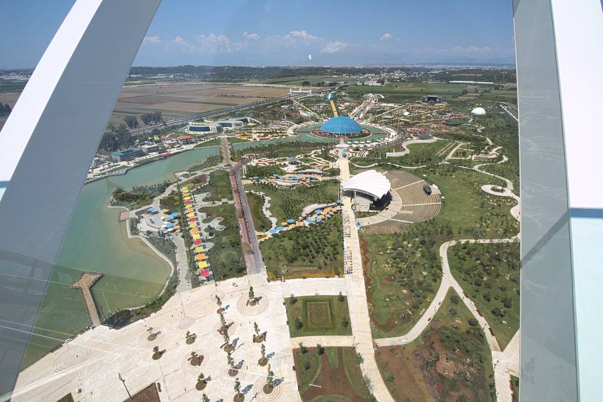
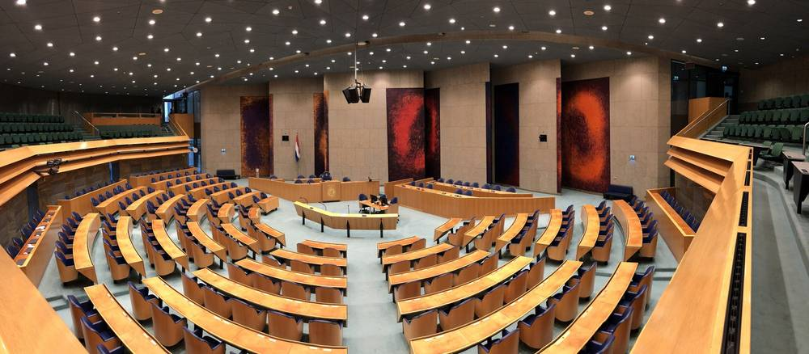
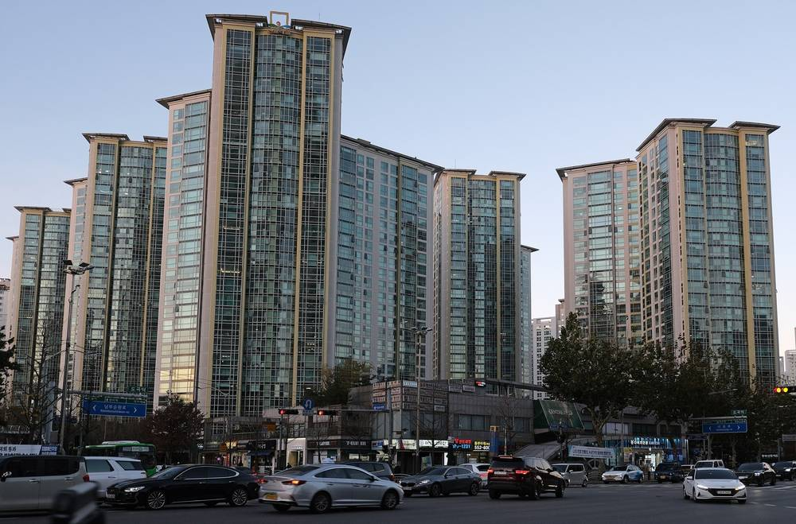
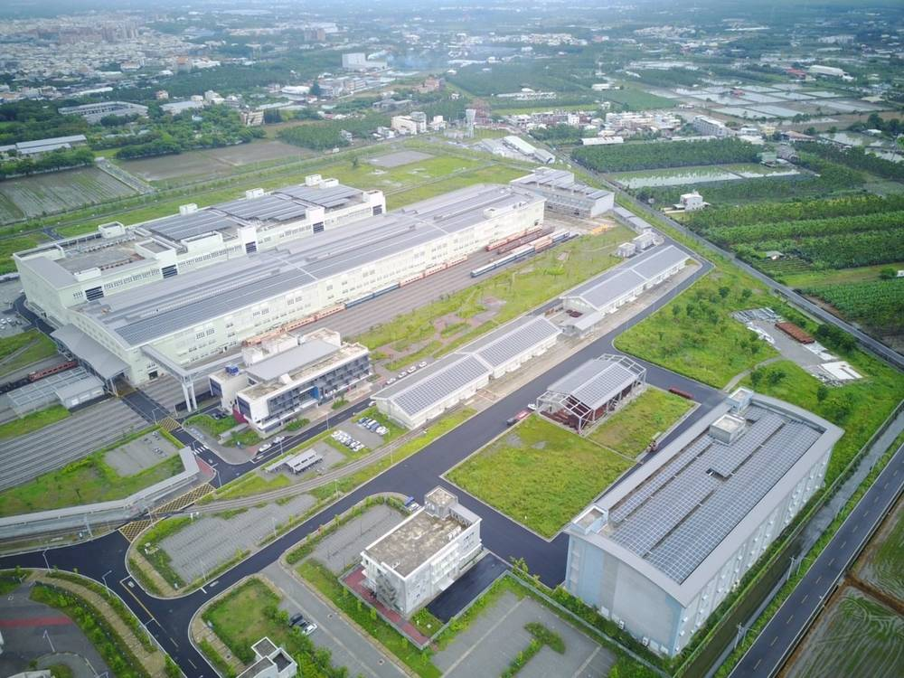
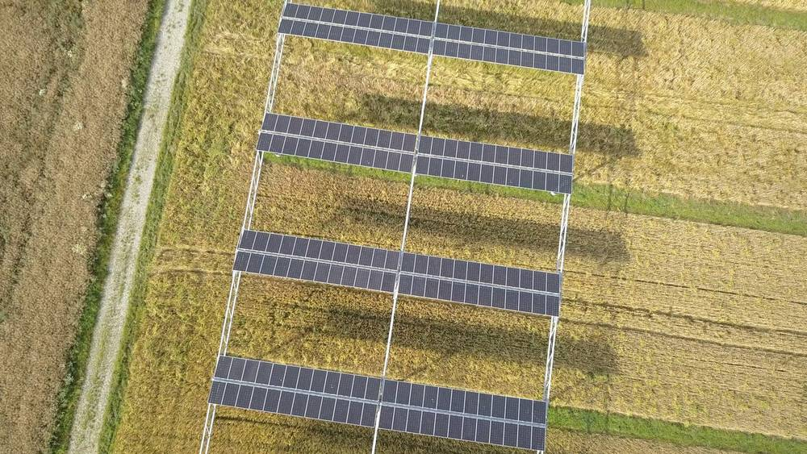

제주도, COP31서 '2035 탄소중립' 제시…"재생에너지 수익을 주민소득·지역복지로"
튀르키예 안탈리아서 4년 연속 제주세션…기후시민회의·V2G·ESS로 시민 에너지시장 참여 넓힌다



대만 재생에너지연맹, 지방선거 후보 에너지 회복력 공약 별점 평가…45명 중 18명만 답해
주민 재생에너지 지원·2035년 로드맵 내놓은 신주시 후보 "특히 돋보여"

영농형 태양광법 12월 17일 시행 앞두고…농식품부 "외지인 '알박기' 막게 한 사람 몫에 상한"
임차농은 사업 기간 계약 자동 갱신·임차료 인상 5% 제한, 표준 임대차계약서 내년 보급
오늘 주목할 소식
- 美 쿠야호가 카운티, 매립지 태양광 넓히려 750만 달러 빌린다…지자체 협의체 NOPEC이 어음 매입
- 호주 농촌 "재생에너지 반대 아냐, 제대로 된 발언권과 공정한 몫 달라"…NSW 3개 마을 연구
- 美 애너하임 시영 전력, 태양광 150MW·배터리 138.5MW 20년 구매 계약…약 9억5,500만 달러
- 함평군, 빛그린국가산단 'RE100 시범산단'·재생에너지 자립도시 1호 추진…함평 쪽 330만㎡로 확장
- 독일 자르베크 주민 에너지협동조합, 1년 새 조합원 380명→574명…새 풍력에 300만 유로
- 영국 정부 지원 '넷제로 허브' "지역에너지, 주민이 에너지의 주인이 되는 일"
햇빛소득마을 더보기 ›
정치 더보기 ›
제주도, COP31서 '2035 탄소중립' 제시…"재생에너지 수익을 주민소득·지역복지로"
튀르키예 안탈리아서 4년 연속 제주세션…기후시민회의·V2G·ESS로 시민 에너지시장 참여 넓힌다
정책 더보기 ›
제주도, COP31서 '2035 탄소중립' 제시…"재생에너지 수익을 주민소득·지역복지로"
튀르키예 안탈리아서 4년 연속 제주세션…기후시민회의·V2G·ESS로 시민 에너지시장 참여 넓힌다
산업·경제 더보기 ›
美 애너하임 시영 전력, 태양광 150MW·배터리 138.5MW 20년 구매 계약…약 9억5,500만 달러
시의회 7대0 승인, 약 7만5,000가구분…배터리 성능 3개월 연속 90% 밑돌면 대금 안 내
사회 더보기 ›
호주 농촌 "재생에너지 반대 아냐, 제대로 된 발언권과 공정한 몫 달라"…NSW 3개 마을 연구
상반기에만 141개 사업 325억 호주달러…주민들 "강제력 있는 참여 기준·이익공유 틀 법에 넣어야"
지역 더보기 ›
美 쿠야호가 카운티, 매립지 태양광 넓히려 750만 달러 빌린다…지자체 협의체 NOPEC이 어음 매입
원금은 연방 세액공제로 갚을 계획, 돈 늦으면 재산세 과세권으로 담보
오피니언 더보기 ›
"햇빛소득마을 3,000곳의 30배"…황우현 교수, 전국 동·리 10만 곳 '자립형 에너지 타운' 제안
타운마다 1MW씩 2035년 100GW…"5,700세대 단지 검토서 자립률 최대 80%, 가구당 연 60만~100만 원 수익공유"
시민에너지 더보기 ›
독일 자르베크 주민 에너지협동조합, 1년 새 조합원 380명→574명…새 풍력에 300만 유로
짓고 있는 신닝엔·미덴도르프 풍력 터빈에 주민 돈 몰려…조합 자산도 크게 늘어
햇빛소득마을 더보기 ›
정부 "조건부 선정 햇빛소득마을도 사업화 지원"…ESS 구축 사업 11월 공고, 1MW 이하 주민참여 태양광 계통 우선접속 12월 말 시행
행안부·기후부·농식품부 설명자료…"523곳 중 즉시 착수 36곳" 지적에 저수지·비축농지·도로 사면 등 유휴 국공유지 제공 계속
済州道、COP31で「2035年カーボンニュートラル」を提示…「再エネ収益を住民所得・地域福祉へ」
トルコ・アンタルヤで4年連続の済州セッション…気候市民会議・V2G・ESSで市民のエネルギー市場参加を拡大
太陽光所得村 もっと見る ›
政治 もっと見る ›
済州道、COP31で「2035年カーボンニュートラル」を提示…「再エネ収益を住民所得・地域福祉へ」
トルコ・アンタルヤで4年連続の済州セッション…気候市民会議・V2G・ESSで市民のエネルギー市場参加を拡大
政策 もっと見る ›
済州道、COP31で「2035年カーボンニュートラル」を提示…「再エネ収益を住民所得・地域福祉へ」
トルコ・アンタルヤで4年連続の済州セッション…気候市民会議・V2G・ESSで市民のエネルギー市場参加を拡大
産業・経済 もっと見る ›
米アナハイム市営電力、太陽光150MW・蓄電池138.5MWの20年購入契約…約9億5,500万ドル
市議会が7対0で承認、約7万5,000世帯分…蓄電池性能が3か月連続90%を下回れば代金支払わず
社会 もっと見る ›
豪農村「再エネに反対ではない、きちんとした発言権と公正な分け前を」…NSW州3町の研究
上半期だけで141事業・325億豪ドル…住民「強制力ある参加基準と利益共有の枠組みを法に」
地域 もっと見る ›
米カヤホガ郡、埋立地太陽光の拡張へ750万ドル借り入れ…自治体連合NOPECが手形を購入
元本は連邦税額控除で返済予定、遅れれば固定資産税の課税権で担保
オピニオン もっと見る ›
「日差し所得村3,000カ所の30倍」…黄祐鉉教授、全国の洞・里10万カ所に「自立型エネルギータウン」を提案
タウンごとに1MW、2035年に100GW…「5,700世帯団地の検討で自立率最大80%、世帯あたり年60万〜100万ウォンの収益共有」
市民エネルギー もっと見る ›
ドイツ・ザーベックの住民エネルギー協同組合、1年で組合員380人→574人…新風力に300万ユーロ
建設中のジニンゲン・ミッデンドルフの風力タービンに住民資金が集中…組合資産も大きく拡大
太陽光所得村 もっと見る ›
韓国政府「条件付き選定のひなた所得村も事業化を支援」…ESS構築事業を11月公告、1MW以下の住民参加型太陽光の系統優先接続を12月末施行
行政安全部・気候エネルギー環境部・農林畜産食品部が説明資料…「523カ所中すぐ着手できるのは36カ所」との指摘に、貯水池・備蓄農地・道路法面など遊休国公有地の提供を継続
阳光收入村 更多 ›
政治 更多 ›
韩国济州道在COP31提出"2035年碳中和"…"将可再生能源收益转为居民收入和地方福利"
连续第四年在土耳其安塔利亚举办济州专场…以气候市民会议、V2G和储能扩大市民参与能源市场
政策 更多 ›
韩国济州道在COP31提出"2035年碳中和"…"将可再生能源收益转为居民收入和地方福利"
连续第四年在土耳其安塔利亚举办济州专场…以气候市民会议、V2G和储能扩大市民参与能源市场
产业·经济 更多 ›
美国阿纳海姆市营电力签下光伏150MW、储能138.5MW 20年购电合同…约9.55亿美元
市议会7比0通过，约7.5万户用电量…电池性能连续3个月低于90%则不付款
社会 更多 ›
澳大利亚农村："不反对可再生能源，要的是真正的话语权和公平份额"…新州3个小镇研究
仅上半年就有141个项目、325亿澳元…居民："应把有约束力的参与标准和利益共享框架写入法规"
地方 更多 ›
美国凯霍加县为扩建垃圾填埋场光伏借款750万美元…地方政府联合体NOPEC认购票据
本金计划用联邦税收抵免偿还，若资金延迟则以财产税征税权作担保
评论 更多 ›
“阳光收入村3,000个的30倍”…黄祐铉教授提议在全国10万个洞、里建设“自立型能源镇”
每镇1MW，2035年达100GW…“5,700户小区研究显示自给率最高80%，每户每年可分享60万至100万韩元收益”
市民能源 更多 ›
德国萨尔贝克居民能源合作社一年内社员从380人增至574人，新风电募资300万欧元
居民资金涌向在建的辛宁根和米登多夫风机，合作社资产大幅增加
阳光收入村 更多 ›
韩国政府称“附条件入选的阳光收入村也将支持落地”：储能建设项目11月招标，1MW以下居民参与型太阳能电网优先接入12月底实施
行政安全部、气候能源环境部、农林畜产食品部发布说明材料，回应“523个村仅36个可立即开工”的批评，将继续提供水库、储备农地、道路边坡等闲置国有和公有土地
Jeju presents 2035 carbon-neutral goal at COP31, pledges to return renewable profits to residents
Fourth straight Jeju session, held in Antalya, highlights a climate citizens' assembly and V2G and battery storage to bring citizens into the power market
Taiwan renewable alliance rates local election candidates' energy resilience pledges; only 18 of 45 respond
A Hsinchu City candidate who backed community renewables and a 2035 roadmap stood out
Ahead of Korea's agrivoltaics act on Dec. 17, farm ministry plans per-person capacity cap to stop outside 'land-grabbing'
Tenant farmers get automatic lease renewal and a 5% cap on rent increases; a standard lease form will be issued next year
Today's highlights
- Cuyahoga County to borrow up to $7.5 million to expand landfill solar, with notes bought by regional energy council NOPEC
- Rural Australians back clean energy but want a real say and a fair share, study of three NSW towns finds
- Anaheim's city-owned utility signs 20-year deal for 150 MW of solar and 138.5 MW of batteries, worth about $955 million
- Hampyeong pushes Bitgreen national industrial complex as RE100 pilot and Korea's first renewable self-reliant city
- German village energy co-op in Saerbeck grows from 380 to 574 members in a year, raises 3 million euros for new wind
- UK's government-backed Net Zero Hub: community energy lets people 'take ownership of energy'
Sunlight Income Village More ›
- Korea says conditionally selected Sunlight Income Villages will get help to break ground; storage scheme to be tendered in November, grid priority for resident solar under 1MW from end-December
- 126 'Sunshine Income Villages' in South Jeolla–Gwangju Face Heavy Upfront Costs From Storage Conditions; Councillor Calls for Sites on Disused Roads, Embankments and Rail Land
- 19 Villages in Nine Gangwon Counties Apply for Third Round of Korea's "Sunlight Income Village" Program; Results Due in December
Politics More ›
Jeju presents 2035 carbon-neutral goal at COP31, pledges to return renewable profits to residents
Fourth straight Jeju session, held in Antalya, highlights a climate citizens' assembly and V2G and battery storage to bring citizens into the power market
- Taiwan renewable alliance rates local election candidates' energy resilience pledges; only 18 of 45 respond
- Ahead of Korea's agrivoltaics act on Dec. 17, farm ministry plans per-person capacity cap to stop outside 'land-grabbing'
- UK's government-backed Net Zero Hub: community energy lets people 'take ownership of energy'
- Dutch parliament tells government to set balcony solar connection rules by spring; 12 of 17 groups in favour
Policy More ›
Jeju presents 2035 carbon-neutral goal at COP31, pledges to return renewable profits to residents
Fourth straight Jeju session, held in Antalya, highlights a climate citizens' assembly and V2G and battery storage to bring citizens into the power market
- Ahead of Korea's agrivoltaics act on Dec. 17, farm ministry plans per-person capacity cap to stop outside 'land-grabbing'
- Korea's farm ministry to unveil crop list and per-farm caps for agrivoltaics by end of November
- Korea to tax Sunlight Income Village solar land separately for property tax, from January 2027
- Korea's Agrivoltaics Act, Taking Effect Dec. 17, Caps Each Person's Generating Capacity and Gives Tenant Farmers Automatic Lease Renewal With Rent Increases Capped at 5%
Industry & Economy More ›
Anaheim's city-owned utility signs 20-year deal for 150 MW of solar and 138.5 MW of batteries, worth about $955 million
Council approves 7-0; enough for about 75,000 homes, with no battery payment if performance falls below 90% for three straight months
- Hampyeong pushes Bitgreen national industrial complex as RE100 pilot and Korea's first renewable self-reliant city
- North Jeolla, home to 39,312 solar plants, on alert over regional wholesale power pricing; generators' joint committee to rally on Nov. 25
- Daegwallyeong Wind Farm, Backed by 10.8 Billion Won of Gangwon Province Assets, Earns Only 300 Million Won a Year; Provincial Councillors Call for Review of Economics and Harm to Residents
- Is Surplus Daytime Power From Rooftop Solar on SH Rental Estates Cutting Tenants' Fees? Seoul Councillor Oh Jung-seok Demands Net-Billing Data and a Conversion Plan by End of December
Society More ›
Rural Australians back clean energy but want a real say and a fair share, study of three NSW towns finds
With 141 projects worth A$32.5 billion financed or underway in the first half alone, residents call for enforceable engagement standards and benefit-sharing rules
- More compensation for grid lines, but residents say KEPCO-led siting must change first
- Is Surplus Daytime Power From Rooftop Solar on SH Rental Estates Cutting Tenants' Fees? Seoul Councillor Oh Jung-seok Demands Net-Billing Data and a Conversion Plan by End of December
- International Social Enterprise Forum Shares Eight Cases at Home and Abroad, from a Resident-Run Village Solar Plant to Youth Housing in Public Assets
- Buan County Launches Public Deliberation Committee Over Offshore Wind Transmission Line Dispute; 13 Members Including Five Resident Representatives to Draft Policy Recommendations
Regions More ›
Cuyahoga County to borrow up to $7.5 million to expand landfill solar, with notes bought by regional energy council NOPEC
Federal tax credits are expected to repay the principal, backed by a property-tax pledge if the money is late
- Namwon councillor moves to legislate returning public car park solar income to citizens after forum on cooperative model
- Quezon City Grows Solar Capacity 73% to 58.55MW in Under Two Years, Starting With City Hall, Public Schools and City Hospitals, but Household Uptake Remains Below 1%
- Seoul Energy Corporation Spent Only 77% of Last Year's Solar Budget; Councillor Choi Doo-ho Demands Year-by-Year Plans to Replace Old Panels and Expand Urban Solar
- Daegwallyeong Wind Farm, Backed by 10.8 Billion Won of Gangwon Province Assets, Earns Only 300 Million Won a Year; Provincial Councillors Call for Review of Economics and Harm to Residents
Opinion More ›
'30 times the 3,000 sunlight income villages': professor proposes 100,000 self-reliant energy towns across Korea
1MW per town for 100GW by 2035; review of a 5,700-household complex shows up to 80% self-sufficiency and 600,000 to 1 million won a year per household
- Column | How Far Have Renewables Come at Dangjin Steel? "Responsibility Must Be Proven by Installed Capacity, Not Completion Photos"
- "Let residents without a roof share in solar savings": op-ed urges West Virginia to pass community energy law
- Draft agrivoltaics decree limits agricultural corporations' role; op-ed argues "open a path to work with specialist firms"
- Farm-press column calls "sunlight income villages" an unproven policy, warns of token cooperatives and reliance on outside firms
Citizen Energy More ›
German village energy co-op in Saerbeck grows from 380 to 574 members in a year, raises 3 million euros for new wind
Residents pour money into turbines under construction at Sinningen and Middendorf as the co-op's assets climb
- UK's government-backed Net Zero Hub: community energy lets people 'take ownership of energy'
- Spain's Santa Pola launches local energy community with 200kW on school and sports hall roofs, covering up to half the power of 200 homes and shops
- Telecom firm joins German energy co-op Prokon, which has 42,000 members, with 1,266 shares worth €63,300
- Indonesia enlists 80,000 cooperatives for 100GW village solar, but only 1% operate as critics warn of 'top-down shells'
Sunlight Income Village More ›
Korea says conditionally selected Sunlight Income Villages will get help to break ground; storage scheme to be tendered in November, grid priority for resident solar under 1MW from end-December
Interior, climate and agriculture ministries respond to report that only 36 of 523 villages can start at once, pledge more idle public land such as reservoirs, reserve farmland and road slopes
- 126 'Sunshine Income Villages' in South Jeolla–Gwangju Face Heavy Upfront Costs From Storage Conditions; Councillor Calls for Sites on Disused Roads, Embankments and Rail Land
- 19 Villages in Nine Gangwon Counties Apply for Third Round of Korea's "Sunlight Income Village" Program; Results Due in December
- Hwasun's Sudong village, held back by grid limits, turns to battery storage to connect its 1MW Sunlight Income Village project, with private VPP operators paying for the batteries
- Nine Namwon Villages Conditionally Selected as Sunlight Income Villages; Council Study Group Says 'Now Make Them Real,' Weighs Five Tasks